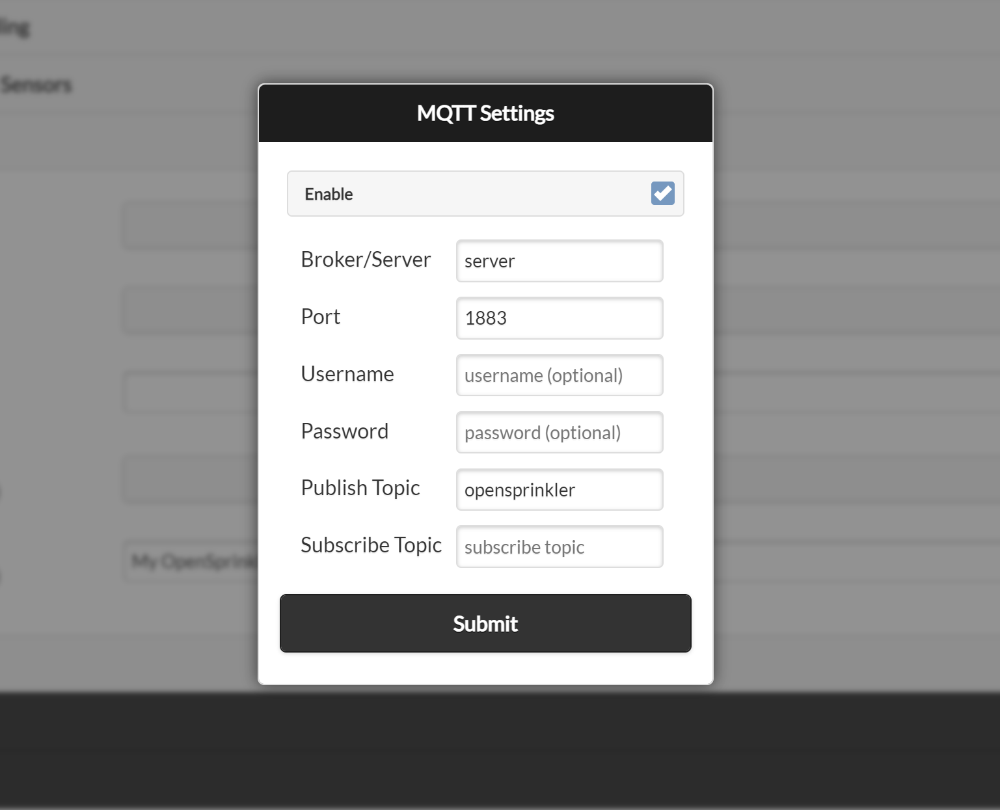

How to Use MQTT
Introduction
Starting from firmware 2.2.1, the MQTT feature has been expanded to include subscription support and customization of topics.
Key Features:
- Publish: As before, the controller can publish its status and information to an MQTT broker. An MQTT client can then subscribe to these topics to receive real-time updates.
- Subscribe (New in 2.2.1): The controller can now subscribe to an MQTT broker, allowing it to receive and act upon specific commands from an MQTT client. This enables actions such as:
- Manually starting a zone
- Running a program
- Rebooting the controller
To use these features, ensure your system meets the minimum requirements:
- Firmware Version: 2.2.1 or later
- App/UI Version: 2.4.1 or later
MQTT Configurations
To configure MQTT settings in OpenSprinkler, navigate from the homepage to Edit Options → Integration. Here you can adjust the MQTT settings:

- Broker/Server: Enter either the IP address or DNS name of your MQTT broker/server.
- Port: The default MQTT broker port is 1883. Modify this if your broker uses a different port.
- Username/Password (Optional): Provide credentials if your broker requires authentication.
- Publish Topic: The topic where OpenSprinkler publishes notifications.
- Default: opensprinkler (for backward compatibility)
- Recommended: Change this to a unique name to distinguish between multiple controllers.
- Subscribe Topic: The topic OpenSprinkler listens to for commands. It is initially empty, which disables command subscription. Click Use Default to generate a unique topic based on the controller's MAC address, or enter another topic that is unique to this controller.
Understanding MQTT Broker and Client
If you're new to MQTT, you may want to look up MQTT tutorials or guides for a deeper understanding.
- In Linux or Raspberry Pi, you can set up an MQTT broker using Mosquitto:
sudo apt install mosquitto mosquitto-clients
- MQTT follows a publisher/subscriber model:
- The MQTT broker manages multiple publishers and subscribers.
- A publisher sends messages to the MQTT broker.
- A subscriber receives messages from the MQTT broker.
- You can use these command-line tools:
- Publish a message:
mosquitto_pub -h <broker_ip> -t "my_topic" -m "message_content"
- Subscribe to a topic:
mosquitto_sub -h <broker_ip> -t "my_topic"
- Mobile apps are also available for publishing and subscribing to MQTT topics.
Understanding MQTT Topics
MQTT data is structured in a hierarchy of topics separated by "/".
Example: Publishing Data from OpenSprinkler
- The OpenSprinkler firmware can publish status data to:
my_opensprinkler/station/0- Contains status information for station 0 (first station) of the my_opensprinkler controller.
- Or send a sensor event to:
my_opensprinkler/sensor1- Contains data for sensor1 of that controller.
Subscribing to Topics
- A subscriber can:
- Listen to a specific topic:
my_opensprinkler/station/0 - Use wildcards to subscribe to multiple topics:
- Receive all topics under my_opensprinkler/:
my_opensprinkler/# - Receive ALL topics from ALL controllers:
#
- Receive all topics under my_opensprinkler/:
- Listen to a specific topic:
With these configurations, OpenSprinkler can effectively integrate with MQTT enabling seamless automation and real-time updates.
Topics Published by Firmware 2.2.1(6)
OpenSprinkler publishes messages to the MQTT broker in a format similar to IFTTT and email notifications.
- The default root topic is
opensprinkler, but can be customized in the settings. - The publish topic itself can contain subtopics, such as
MA_home/lawn/sprinkler. - Due to the firmware storage limit, the maximum topic length is 24 characters.
- Below we use
publish_topicto denote this name.
Here is the list of topics that firmware 2.2.1(6) publishes:
- Reboot:
publish_topic/systemsends{"state":"started","cause":cc}when the controller boots, whereccis the reboot-cause code. - Program Start:
publish_topic/program/x, wherexis the program index (starting from 0 for the first program).- A successfully scheduled program sends
{"state":1,"wl":xx,"wa":w,"sa":s,"ta":t}.wlis the weather-adjusted watering percentage;wa,sa, andtaare the weather, sensor, and total adjustment factors. - A skipped program sends
{"state":"skipped","wtrestr":x}. The program may be skipped because its watering level is 0% or because of the weather restriction indicated bywtrestr.
- A successfully scheduled program sends
- Zone Activity:
publish_topic/station/x, wherexis the index (starting from 0 for the first zone).- This topic sends
{"state":1,"duration":ss}when zonexstarts, wheressis the scheduled runtime in seconds. - It sends
{"state":0,"duration":rs}when that zone closes, wherersis the actual runtime in seconds. When SN1 is configured as a flow sensor, the closing payload also includes"flow":fffor a completed run. - To receive messages for all zones, subscribe to wildcard
publish_topic/station/#. Firmware 2.2.1 also publishes{"state":1}on a master/pump zone when that zone opens, but the duration is omitted as a master zone runs dynamically based on other zones. - For a Bundle Station run, only the bundle leader publishes zone activity; its derived bundle members do not publish separate activity messages.
- This topic sends
- Sensor Events:
publish_topic/sensorNsends{"state":1}when built-in sensorNactivates and{"state":0}when it deactivates.Nranges from 1 to 4 where supported by the controller hardware. - Rain Delay Events:
publish_topic/raindelayis similar to sensor events but for rain delays. - Flow Sensor Data:
publish_topic/sensor/flowsends{"count":cc,"volume":vv}when the flow sensor generates data, normally after a program finishes.ccis the pulse count andvvis the calculated volume in the unit implied by the configured Flow Pulse Rate. - Weather Adjustment Updates:
publish_topic/weathersends{"water level":pp}when the watering percentage changes, such as after an automatic weather update. - Flow Alert:
publish_topic/station/x/alert/flowsends{"flow_rate":ff,"duration":ss,"alert_setpoint":aa}when zonexexceeds its configured flow-alert setpoint. - Current Alert:
- Station Under or Overcurrent Alert:
publish_topic/station/x/alert/curr, wherexis the station index. This topic sends{"curr_value":cc,"imin_threshold":tt}or{"curr_value":cc,"imax_limit":tt}for under and overcurrent alerts respectively. - System Overcurrent Alert:
publish_topic/overcurrentsends{"curr_value":cc,"imax_limit":tt}. !!! note Station overcurrent is detected immediately after a station is turned on (so the firmware can detect the offending station). System overcurrent is detected during the operation of the system, not associated with opening a zone.
- Station Under or Overcurrent Alert:
Notification events and availability
Starting from 2.2.1(1), MQTT notifications are managed through the Notification Events setting, just like IFTTT and email notifications. To receive event messages, you must enable the corresponding Notification Events. If no events are selected, the controller still publishes its availability state but does not publish event notifications.
OpenSprinkler publishes publish_topic/availability with the retained payload online or offline (i.e. non-JSON). If your MQTT client requires strict JSON format (such as ThingsBoard), configure your client to filter out non-JSON payloads or set up an Uplink Data Converter.
Topics Subscribed by Firmware 2.2.1
Firmware 2.2.1 allows OpenSprinkler to subscribe to a user-defined MQTT topic, enabling it to receive commands from an MQTT broker. This means an MQTT client can send commands to control OpenSprinkler's operations.
To enable this feature:
- Set a valid Subscribe Topic in the MQTT configuration above. Click Use Default to generate one from the controller's MAC address (e.g.
OS-112233AABBCC). - You may enter a custom topic, but each controller should have a unique subscribe topic.
- Due to firmware storage limitations, the maximum length of a subscribe topic is 24 characters.
- The Subscribe Topic is optional. If left empty, the controller will not respond to MQTT commands.
To control OpenSprinkler, an MQTT client must:
- Publish a command message to the
subscribe_topic. - Include a payload that specifies the command and parameters.
The commands must follow the same format as OpenSprinkler's HTTP API (see the HTTP API reference). Specifically:
- Payload structure:
<endpoint>?<parameter1>=<value>&<parameter2>=<value> - The endpoint is a two-letter code (without a leading "/") as in the HTTP API.
- Parameters are separated by &.
- The device password (
pw) must be included as its lowercase MD5 hash, unless Ignore Password is enabled.
MQTT commands are fire-and-forget. The controller does not publish an acknowledgement or error response, so an invalid or rejected command produces no MQTT reply.
Only a subset of the HTTP API commands are currently supported. Their validation and behavior match the corresponding HTTP endpoints:
- Change Controller Variables (endpoint:
cv) with the following parameters:rsn: Reset all stations (include those waiting to run).rbt: Reboot controller.en: Operation enable/disable.rd: Set rain delay time (in hours).
- Manual Station Run (endpoint:
cm) - Manually Start a Program (endpoint:
mp) - Start Run-Once Program (endpoint:
cr)
For example, to reset all stations, the payload message would be cv?pw=xxx&rsn=1, where pw=xxx is the lowercase MD5 hash of the device password.
To use mosquitto_pub to send this command, you may run:
mosquitto_pub -h your_mqtt_broker -p 1883 -t subscribe_topic -m "cv?pw=xxx&rsn=1"
As another example, to manually start zone 1 for 2 minutes and 45 seconds (i.e. a total of 165 seconds), the payload message would be:
cm?pw=xxx&sid=0&t=165&en=1
Refer to MQTT Command Subscriptions in the HTTP API reference for the complete command parameters and behavior.
MQTT packet-size limit
On OpenSprinkler v3 and v4, the MQTT library limits each complete packet to 256 bytes. The topic and MQTT protocol overhead count toward this limit, so the available command payload is less than 256 bytes and depends on the topic length. Oversized commands are silently discarded before the firmware receives them; this most often affects cr commands containing durations for many stations. OSPi/Linux does not have this firmware-defined limit. Use the HTTP API for commands that do not fit in one MQTT packet.